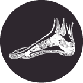

Gustavo Ibarra es un hombre de aproximadamente 70 años de edad que esconde lo que él nombra como un gran don, tras un cuerpo delgado, pequeño y moreno, coronado con una cabellera canosa, de esas que dejan al descubierto una gran frente arrugada que remata en unos lentes de microscopio. Si el nombre de Gustavo Ibarra es común, el oficio no. Se le conoce como el señor de los callos.
Con sus manos hábiles y despojadas de todo látex, el señor da tratamiento a los callos y hongos que aparecen hasta en los más finos pies. En el tianguis dominical el Baratillo, en el oriente de Guadalajara, y fuera de sus fronteras que abarcan unos 6.5 kilómetros, Gustavo es prestigioso por tratar a las extremidades inferiores ajenas como ninguno otro, a pesar de que no tiene una clínica, no paga ninguna publicidad y ni siquiera es un profesional en el asunto.
“Hago esto desde que cumplí doce años, cuando dejé la escuela y comencé a vender pomadas para callos en el barrio de San Juan de Dios”, en el centro de Guadalajara, recuerda, mientras lima un hongo negro que se resiste a ser retirado de su uña gorda del pie derecho. La uña y el hongo pertenecen a una joven delgada, de unos 17 años de vida, a la que aquí llamaremos Alejandra.
De San Juan de Dios, Gustavo decidió mudarse al Baratillo, donde lleva 53 años de su vida compartiendo la calle Juan R. Zavala (la 38) y las aledañas con unos diez mil vendedores de ropa, discos pirata, animales exóticos, garnachas, electrónicos, y todo aquello, nuevo y usado, legal e ilegal, que se compre o venda en la capital de Jalisco. Siempre en el mismo lugar del mismo mercado ambulante, donde protagoniza la atmósfera bipolar de amabilidad y rivalidad que ahí se respira y que ya forma parte de la personalidad de los vendedores.
El uso de objetos punzocortantes (agujas, tijeras, ganchos, rastrillos, cortaúñas) que han sido usados en otras personas implica riesgos de adquirir enfermedades graves, si las herramientas no reciben esterilización adecuada.
En el arreglo de los pies y las manos, las afecciones pueden contagiarse a través de la sangre, incluso cuando no hay restos evidentes, o por el contacto simple —algunos hongos, virus y bacterias—, advierte la Organización Mundial de la Salud (OMS).
De los 20 agentes patógenos de transmisión hemática (por la sangre), los virus de la hepatitis C y de Inmunodeficiencia Humana son los más graves. Por esta vía también se transmiten también la sífilis, la malaria y el herpes.
Además existe el riesgo de tétanos, si la bacteria habita en los punzocortantes o el ambiente.

Según la OMS, la hepatitis B es la afección más común de transmisión por vía hemática y la única para la que existe una vacuna.
***
Es domingo. El Señor de los Callos usa un pantalón de vestir negro cruzado con rayas claras, unos zapatos oscuros y una playera azul, de manga corta. Ha preparado su puesto con diez sillas de lámina plegables, una pequeña mesa cuadrada —su quirófano— y dos lonas informativas, de dos metros por uno. Estos objetos hacen el mobiliario ordinario de su local de tres por cinco metros, entre el cual es imprescindible, además, una pequeña bocina que reproduce, desde las ocho de la mañana hasta las cuatro de la tarde, una voz –la de Gustavo—, que vocea las maravillas del trabajo que se practica allí.
“Yo empecé hablándole a la gente por un micrófono y una bocina, y a la fecha sigo haciendo mis propias herramientas de trabajo”, se ufana, a la vez que le muestra a su interlocutora la lima y el filoso cortaúñas. A lo largo del día, estas herramientas pasarán de pie en pie, de callo en callo, de hongo en hongo a través de las alrededor de cien personas que el especialista dice que atiende cada domingo.
Entre la larga y pachorruda fila de protuberancias y rarezas que esperan ser extirpadas de un montón de pies, está el hongo terco de Alejandra, quien ha llegado al puesto con unas sandalias floreadas. A su corta edad Alejandra es una clienta frecuente del lugar; esta es la tercera vez que le pide ayuda a Gustavo. De inmediato él pone en práctica todo su don para cortar, limar, raspar y así expulsar, la mancha negra con apariencia de mugre que se aferra al dedo de la joven, quien tras haber soportado dolor pone una sonrisa de sandía, al ver la mitad que quedó de su uña, que ha dado lugar a una mancha de piel expuesta.
El vencedor de aquel hongo se siente orgulloso. “La agilidad que Dios me ha dado, no la tiene nadie”, alardea y recibe los 150 pesos que su joven clienta le entrega gustosa.
“Me importa la gente, no la feria”, jura el curandero. Sin embargo, su cajita de los dineros ahora está más llena. Los billetes que va colocando dentro de ella servirán para completar los más de ocho mil pesos que, dice él, reúne cada domingo como gratificación por su don, de los cuales le paga 75 al Ayuntamiento de Guadalajara, por la renta semanal de su pequeño espacio.
No cualquiera tiene un don como este; por eso, muchos se sienten atraídos con envidia por la aparente facilidad con que don Gustavo trabaja y se gana sus centavos, según el quita callos. “Me han pedido trabajo podólogos titulados, pero mis clientes no están para que practiquen con ellos”, afirma con un gesto que se parece al coraje. Añade que ya está harto de la insistencia de quienes pasaron por la universidad, llegan queriendo enseñarle cómo realizar sus tratamientos y buscan hacer de su humilde local una especie de clínica cara.
Él no necesita de eso, insiste. Él tiene el talento y las herramientas. Él fabrica incluso sus propios ungüentos, que vende a 30 pesos y de los cuales sólo sus ayudantes, la cuñada y la hermana, conocen la fórmula que, como suele ocurrir, es secreta.
La mayoría de las instituciones de medicina pública tienen un servicio de dermatología. Dicha especialidad cura las afecciones en la piel, el cuero cabelludo y la uñas.
En la zona metropolitana de Guadalajara, la Secretaría de Salud Jalisco tiene un hospital entero; el Instituto Dermatológico de Jalisco, doctor Barba Rubio (www.dermatologico.org). Trabaja de lunes a viernes, desde las 7:00 PM, cuando reparte un número limitado de fichas de consulta. El servicio médico cuesta 50 pesos.
El Instituto Dermatológico está en Federalismo Norte 3102, colonia Atemajac del Valle, Zapopan, justo al pie de la estación del tren ligero Dermatológico, sus teléfonos son (33) 3030-4536, 3030-4537 y 3030-4538.
***
El Baratillo es uno de los mercados ambulantes más extensos del continente. La gente que pasa cerca de don Gustavo se le queda viendo: una con curiosidad y otra con asco, ante la gran variedad de pies que se disponen a ser tocados por las manos del señor, quien jamás pone expresión de desagrado alguna. Por el contrario, se le ve gustoso, como si aquel callo que está cortando fuera la misma cosa que este suculento rollo primavera que apenas unos segundos más tarde decide probar y que se comerá a mordiscos intercalados, entre pie y pie.
“Yo les cambio los pies”, presume él, nuevamente orgulloso mientras atiende a otra de sus fieles seguidoras, a quien diagnostica nomás con estudiarle detenidamente el cuerpo.
La del cuerpo se llama Margarita. Cada año viene desde Acapulco, Guerrero, para ser atendida por el podólogo de tianguis. Afirma que nadie le ha sabido quitar, tan bien como Gustavo, los endurecimientos que se le forman en las plantas de ambos pies.
El señor de los callos se encoje de hombros, como si nada le importara la fama. Dice que esa modestia nace de tanto pedirle a Dios, todos los días: “Nomás no permitas que sienta algún punto de egoísmo para seguir dando lo que yo sé”.
Es domingo a mediodía. Gustavo Ibarra vuelve a concentrarse en su trabajo, que no debe ser fácil. Sus dedos pelones deberán encontrarse todavía con una variedad de callos, ojos de pescado, hongos verdes, uñas enterradas y callos engarrados.

Alicia Rivera se dedica a atender entre diez y 11 pies ajenos cada día, de lunes a viernes, en el DIF de Guadalajara, donde la consulta cuesta 40 pesos. Su profesión le costó tres años de estudios en la primera Escuela Mexicana de Podología y un año más de servicio social.
Advierte que la atención de los pies debe hacerse con cuidado, para no generar enfermedades entre los pacientes y quienes los atienden.
¿Cuáles son los padecimientos más comunes que atiendes?
Onicomicosis, el hongo en uña, es la principal, seguido de onicocriptosis, que es la uña encarnada, y úlcera plantar.
¿Qué procedimiento sigues para cuidarte de infecciones y cuidar a tus pacientes?
Lavar bien las herramientas de trabajo, para evitar una infección; con cepillo, jabón quirúrgico y un producto especial.
¿En qué caso dices "no puedo atender” a alguien?
Cuando las personas presentan úlceras venosas, vasculares, dermatitis generalizada (infección aguda), pie diabético necrosado, pie isquémico (infectado, con úlceras profundas), fascitis plantar (inflamación del tejido grueso de la planta), falta de pulso y gangrena.
¿En esta profesión qué riesgos tiene no cuidarse correctamente?
El contagio de paciente a paciente es uno de los principales.